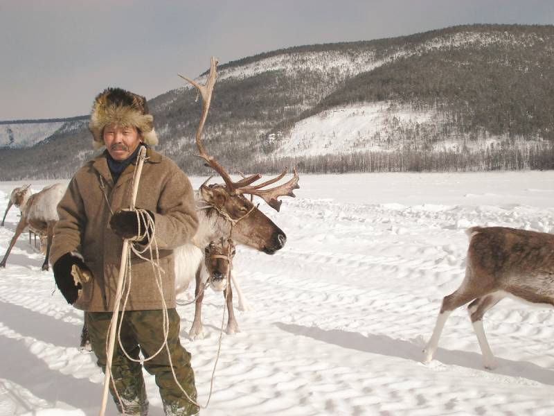

Эвенкия
Эвенкия — это огромное, малонаселённое плато в центре Сибири, знаменитое Тунгусским метеоритом и своим географическим центром России, который отмечен стелой на озере Виви. Это земля суровых таёжных пейзажей, где природа доминирует над человеком, а реки служат главными путями сообщения лишь короткое время в году
